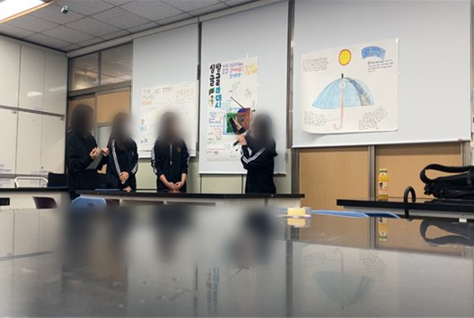
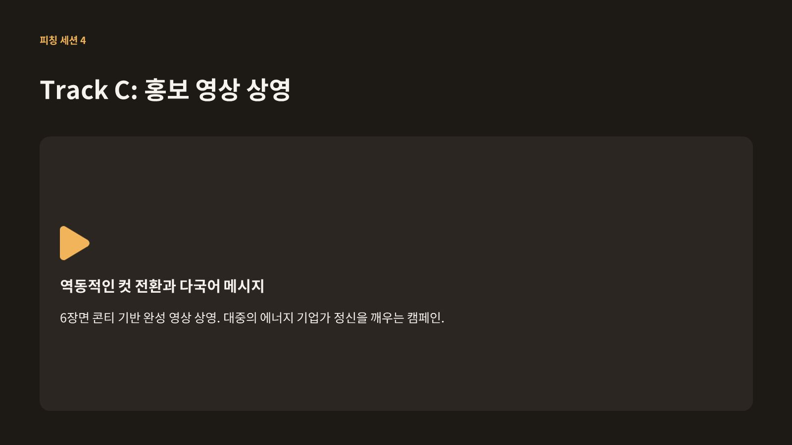
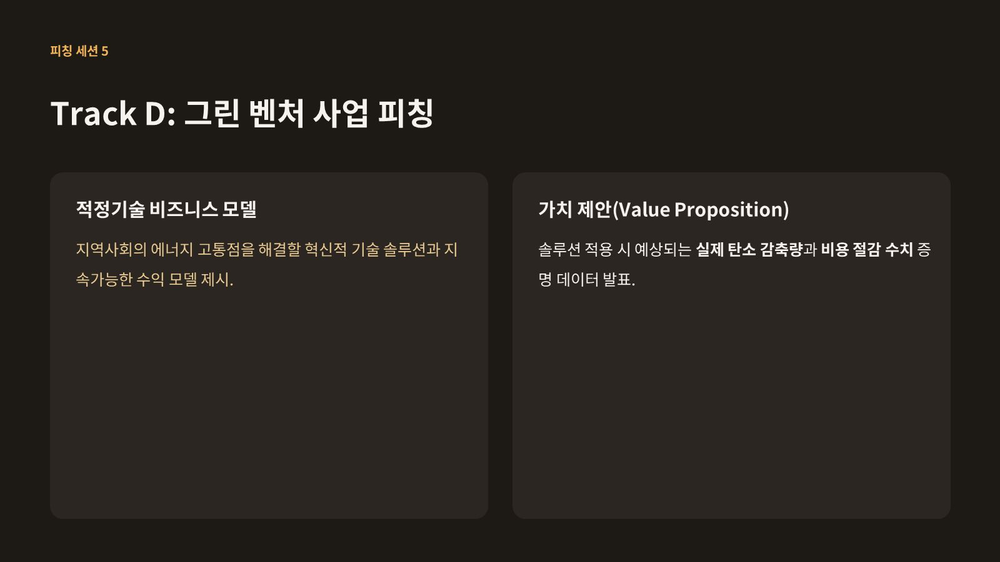
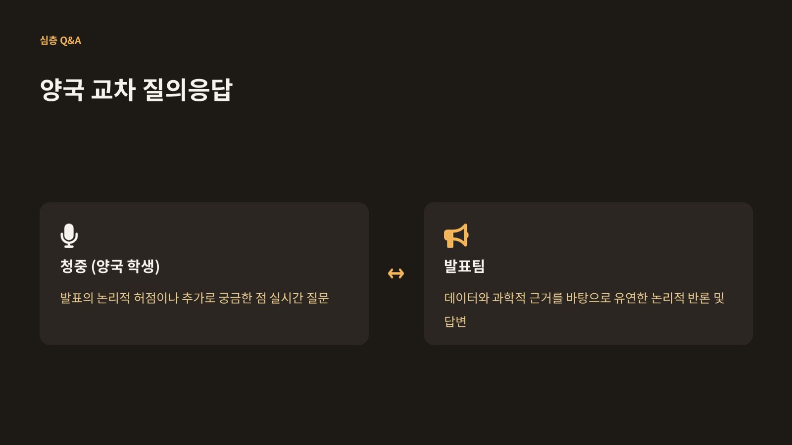
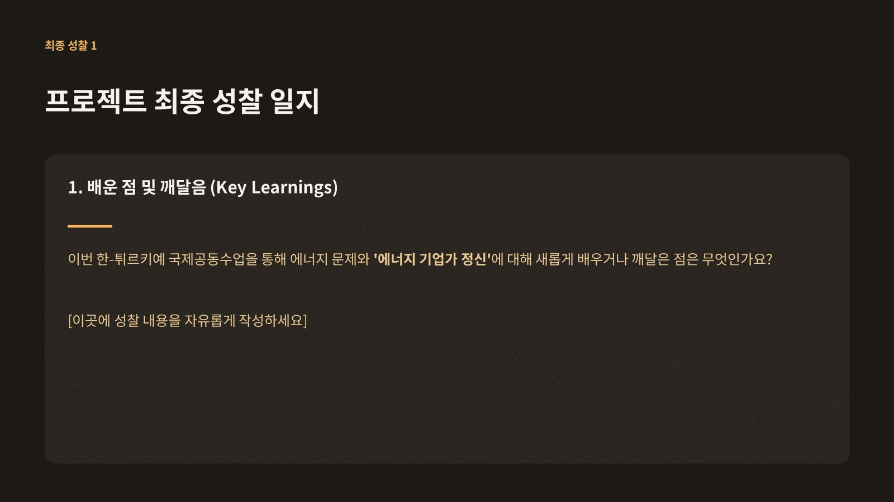
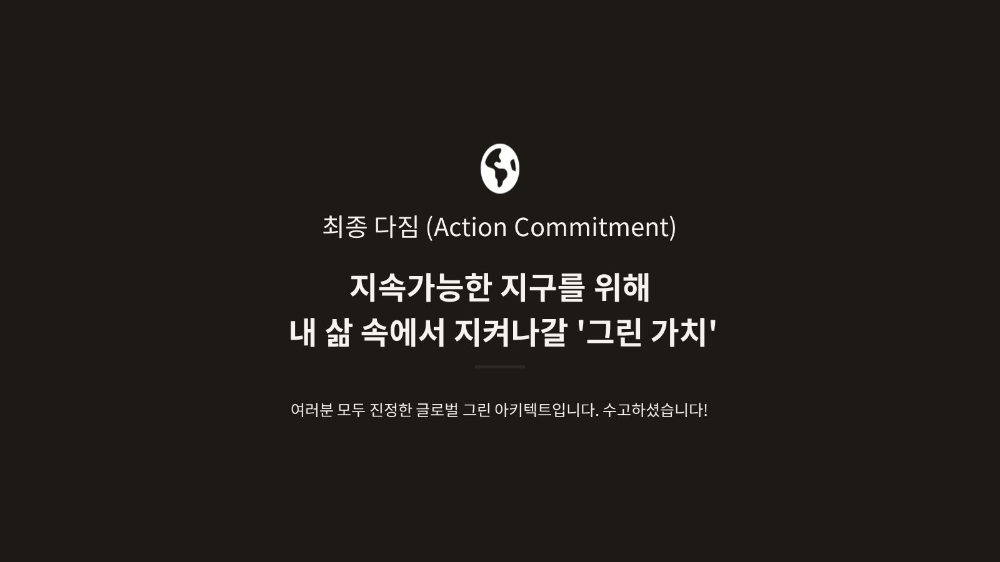

우리는
글로벌 그린 아키텍트
오늘의 목표남은 팀의 피칭과 양국 교차 Q&A를 마치고, 6차시 동안의 배움을 성찰 일지로 정리해요.

수업 흐름
← → 키나 아래 버튼으로 넘겨요. 교사 모드를 켜면 발문·유의점이 보여요.
세션 4 · Track C 홍보 영상 상영
역동적인 컷 전환과 다국어 메시지
6장면 콘티로 완성한 영상을 상영해요. 대중의 에너지 기업가 정신을 깨우는 캠페인!

세션 5 · Track D 그린 벤처 사업 피칭
지역사회의 에너지 고통점을 해결할 혁신 기술 솔루션과 지속가능한 수익 모델을 제시해요.
가치 제안(Value Proposition)
솔루션을 적용했을 때의 예상 탄소 감축량을 계산식(사용량 × 배출계수, 계수 출처 표기)과 함께 제시하고, 실제로 확인하려면 무엇을 측정해야 하는지도 밝혀요. 비용 절감액도 같은 방식으로!

양국 교차 Q&A + 동료 피드백
청중 (양국 학생)
발표의 논리적 허점이나 궁금한 점을 실시간으로 질문
발표팀
데이터와 과학적 근거로 유연하게 반론하고 답변
팀마다 가장 인상 깊은 점과 근거·데이터를 짚은 개선 질문을 남겨요.

시상 & 성찰 일지
- 에너지 문제와 ‘에너지 기업가 정신’에 대해 새롭게 배우거나 깨달은 점은?
- 국적과 언어가 다른 친구들과 협력하며 가장 보람 있었던 순간은?
- 내가 일상과 미래에 실천하고 싶은 ‘그린 가치’는?

여러분 모두 진정한
글로벌 그린 아키텍트입니다.
Mentimeter·Padlet 투표 결과를 함께 보고, 양국이 서로 마무리 인사를 나눠요. 수고했어요!
“국적과 언어가 다른 튀르키예 친구들과 하나의 목표를 가지고 동화책과 사업계획서를 완성해 나가는 과정에서 글로벌 협력의 시너지를 깨달을 수 있었다.”
학생 반응 · 최종보고서

활동지
동료 평가와 성찰 일지
쓴 내용은 이 기기의 브라우저에만 저장돼요. 수업이 끝나면 아래 「내 기록 모두 복사」로 모둠 문서에 붙여 두세요.
1. 가치 제안 설득력
환경적·사회적 가치와 예상 효과가 구체적인가? 예상치(계산식·출처)와 실제로 측정할 값을 구분했는가?
2. 논증의 논리성
문제 정의부터 해결책까지 논리적이고 과학적 근거에 기반하는가?
3. Q&A 대응력
질문과 반론에 타당한 근거로 유연하게 답하는가?
1평가 1
2평가 2
성찰 프로젝트 최종 성찰 일지
이 차시 슬라이드
6차시 슬라이드 · 38~41장
성찰 일지(43장)와 최종 다짐(45장) 슬라이드는 수업 흐름 4·5단계에 들어 있어요(42·44장은 빈 슬라이드).
이 차시 평가
피칭 · 피드백 · 성찰
[10공국2-03-02] [12기지04-01] · 피칭(발표) 평가, 동료 피드백(Padlet), 개인 성찰 일지
| 기준 | A | B | C |
|---|---|---|---|
| 산출물 및 피칭 10공국2-03-02 | 3분 안에 문제–해결–예상 효과(계산 근거 포함)를 순서대로 말하고, 예상치와 실제로 측정할 값을 구분한다. Q&A 질문에 데이터나 원리를 들어 답한다. | 피칭은 시간 안에 했지만 예상 효과에 근거(수치·계산)가 없거나, Q&A에서 근거 없이 답한다. | 3분 안에 문제–해결을 다 말하지 못했거나, Q&A에 답하지 못했다. |
| 동료 피드백의 질 10공국2-03-02 | 다른 팀 발표의 근거·데이터를 짚어 개선 질문을 2팀 이상에 남긴다(예: “배출계수 출처는?”). | 인상 평(“좋았다”, “재밌다”)만 남긴다. | 피드백을 남기지 못했다. |
| 최종 성찰 12기지04-01 | 성찰 3문항에 모두 답하고, 수업 중 바뀐 생각 1가지와 앞으로의 실천 1가지를 구체적 장면·행동으로 쓴다. | 3문항에 답했지만 바뀐 생각이나 실천이 ‘열심히 하겠다’ 수준이다. | 성찰 문항 가운데 2개 이상이 비어 있다. |
참여 여부(투표·평가 시트 제출)는 성취 수준이 아니라 체크리스트로 따로 기록해요.
나가기 질문
6차시 동안 내 생각이 가장 크게 바뀐 순간은 언제였나요? 한 장면으로 적어요.